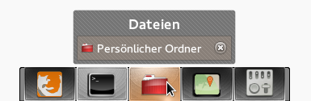
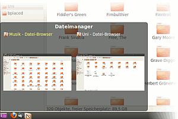

DockbarX
Dieser Artikel wurde für die folgenden Ubuntu-Versionen getestet:
Ubuntu 14.04 Trusty Tahr
Zum Verständnis dieses Artikels sind folgende Seiten hilfreich:
DockbarX  ist ein in Python geschriebenes Dock, welches ähnlich der Taskleiste von Windows 7 offene Anwendungen darstellen, gleichartige gruppieren und zusätzlich Starter beinhalten kann.
ist ein in Python geschriebenes Dock, welches ähnlich der Taskleiste von Windows 7 offene Anwendungen darstellen, gleichartige gruppieren und zusätzlich Starter beinhalten kann.
Für einige Funktionen (z.B. Vorschaufenster) benötigt DockbarX ein 3D-fähiges System bzw. einen Composite-Manager wie beispielsweise Compiz.

Installation¶
DockbarX ist nicht den offiziellen Paketquellen enthalten. Zur Installation muss man ein "Personal Package Archiv" (PPA) [1] verwenden.
PPA¶
Adresszeile zum Hinzufügen des PPAs:
ppa:dockbar-main/ppa
Hinweis!
Zusätzliche Fremdquellen können das System gefährden.
Ein PPA unterstützt nicht zwangsläufig alle Ubuntu-Versionen. Weitere Informationen sind der  PPA-Beschreibung des Eigentümers/Teams dockbar-main zu entnehmen.
PPA-Beschreibung des Eigentümers/Teams dockbar-main zu entnehmen.
Damit Pakete aus dem PPA genutzt werden können, müssen die Paketquellen neu eingelesen werden.
Nach dem Aktualisieren der Paketquellen können folgende Pakete installiert [2] werden:
dockbarx (ppa, die Anwendungsstartleiste)
dockbarx-themes-extra (ppa, optional, zusätzliche Themen/Designs)
 mit apturl
mit apturl
Paketliste zum Kopieren:
sudo apt-get install dockbarx dockbarx-themes-extra
sudo aptitude install dockbarx dockbarx-themes-extra
Zusätzliche Designs können auch manuell durch Kopieren nach ~/.dockbar/themes oder /usr/share/dockbar/themes installiert werden (für eine systemweite Installation nach /usr/share/dockbar/themes sind Root-Rechte erforderlich).
Plugin für Xfce-Panel¶
Seit April 2013 steht DockbarX auch wieder als Panel-Plugin für Xfce zur Verfügung. Man braucht statt des oben erwähnten nur folgendes Paket zu installieren [2]:
sudo apt-get install --no-install-recommends xfce4-dockbarx-plugin

Einrichtung¶
DockbarX kann ab Ubuntu 12.04 wieder im XFCE-Panel verwendet werden. Alternativ, z.B. unter anderen Desktopumgebungen und neueren Versionen von Ubuntu, kann es als alleinstehendes Dock verwendet werden. Dazu ruft man es mit folgendem Befehl auf:
dockx
Anschließend kann man es über "Eigenschaften" im Kontextmenü seinen Wünschen entsprechend konfigurieren. Die DockbarX Einstellungen lassen sich alternativ über "Anwendungen -> Zubehör -> DockbarX Einstellungen" aufrufen.
Um ein Programm dauerhaft als Starter im Applet zu verankern, klickt man rechts auf das Symbol eines gestarteten Programms und wählt "Anwendung anheften" aus. Mit "Eigenen Starter erstellen" erstellt man einen Starter im Panel, der unabhängig vom DockbarX Applet im Panel verbleibt.
DockbarX und Zeitgeist¶
Möchte man angeheftete Programme direkt mit häufig/zuletzt benutzten Dateien starten, kann man dafür Zeitgeist verwenden. Klickt man nun rechts auf eine angeheftete Anwendung, so kann man direkt häufig/zuletzt benutzte Dateien mit dieser öffnen.
DockbarX in AWN¶
Um DockbarX als Plugin im AWN zu verwenden, installiert man aus dem aus dem oben genannten PPA folgendes Paket:
awn-applet-dockbarx (ppa)
mit apturl
Paketliste zum Kopieren:
sudo apt-get install awn-applet-dockbarx
sudo aptitude install awn-applet-dockbarx
Danach ist DockbarX im AWN als Plugin verfügbar.
Links¶
DockbarX auf GNOME-Look.org
- Installation, Benutzung und FAQTheming DockbarX
- eigene Designs erstellenDockbarX
 - Blogbeitrag, 08/2010
- Blogbeitrag, 08/2010Docks und andere Anwendungsstarter
 Programmübersicht
Programmübersicht
- Erstellt mit Inyoka
-
 2004 – 2017 ubuntuusers.de • Einige Rechte vorbehalten
2004 – 2017 ubuntuusers.de • Einige Rechte vorbehalten
Lizenz • Kontakt • Datenschutz • Impressum • Serverstatus -
Serverhousing gespendet von